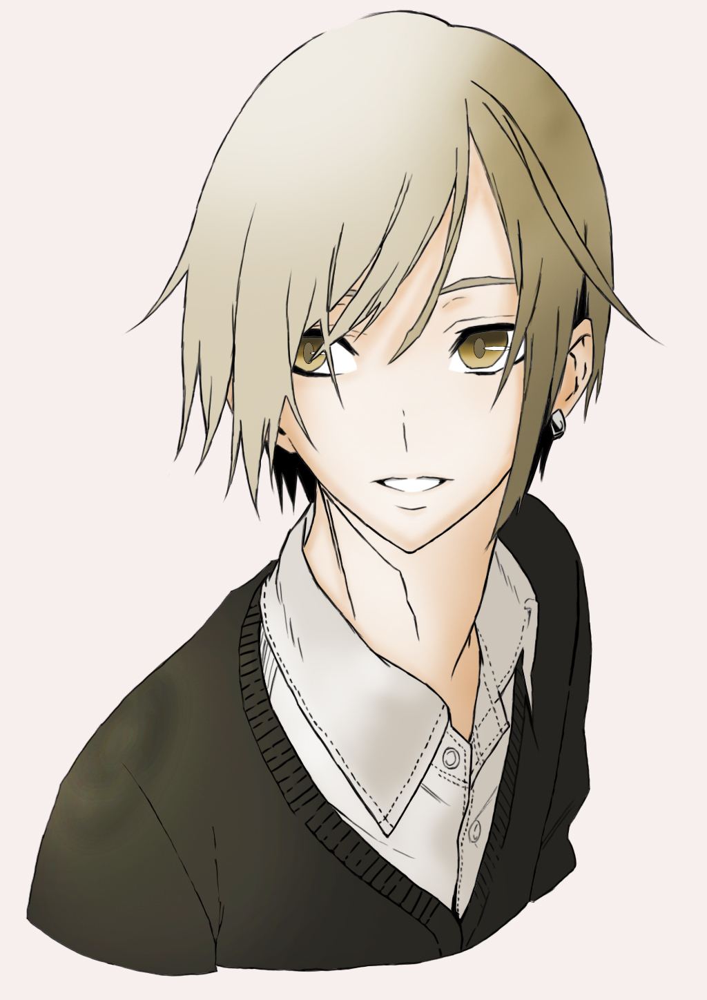

名古屋工学院専門学校_ゲームCG学科_遠藤修二_H29_ポートフォリオ集
トレース作品:アニメ【GC】より【楪いのり】
使用ソフト:CLIP STUDIO PAINT
概要:1年次の進級制作で作成しました。
制作時間:4時間
トレース作品:Twitter投稿作品より【以和】
使用ソフト:Photo Shop
概要:1年次の進級制作で作成しました。
制作時間:3時間

模写作品:アニメ【クズの本懐】より【安楽岡花火】
使用ソフト:Photo Shop
概要:1年次の進級制作で作成しました。
制作時間:3時間

オリジナル作品:2年次前期制作のオリジナルキャラクター
使用ソフト:CLIP STUDIO PAINT
概要:前期制作のゲームで作成したオリジナルキャラクターを題材にした1枚です。
制作時間:3時間
3D作品:ペンギン
使用ソフト:3ds Max
概要:1年次の課題制作で作成したペンギンのモデルです。
制作時間:約12時間